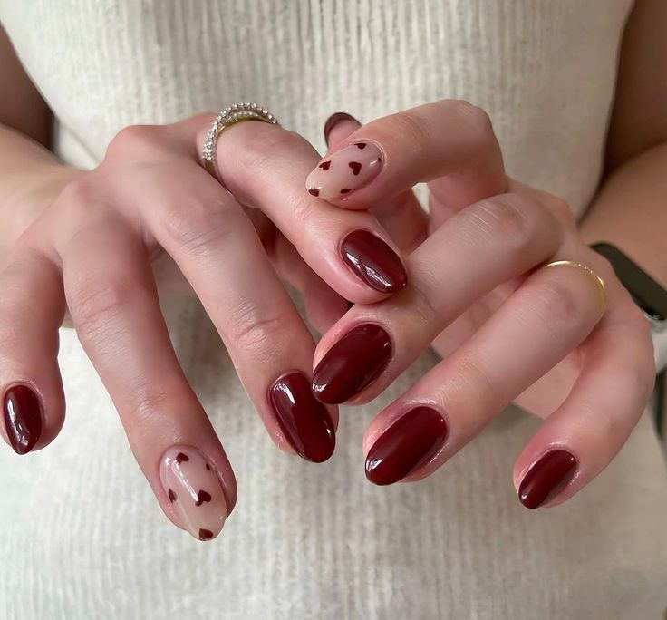
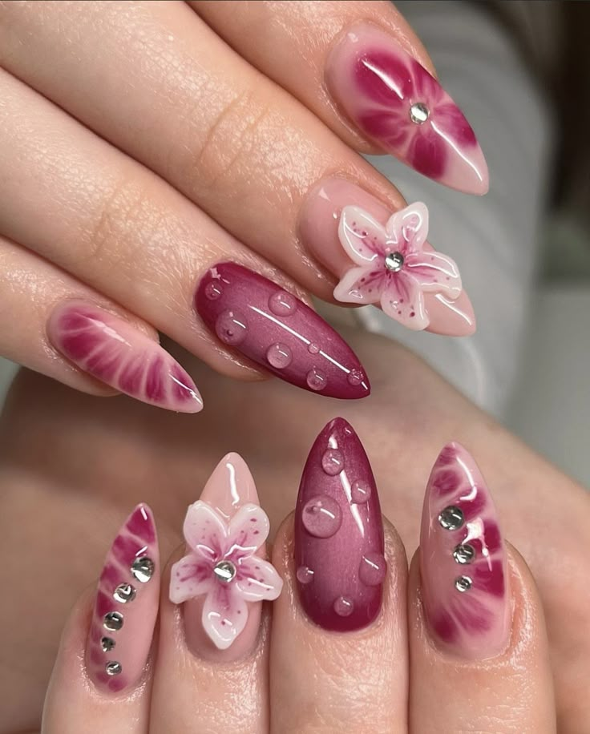
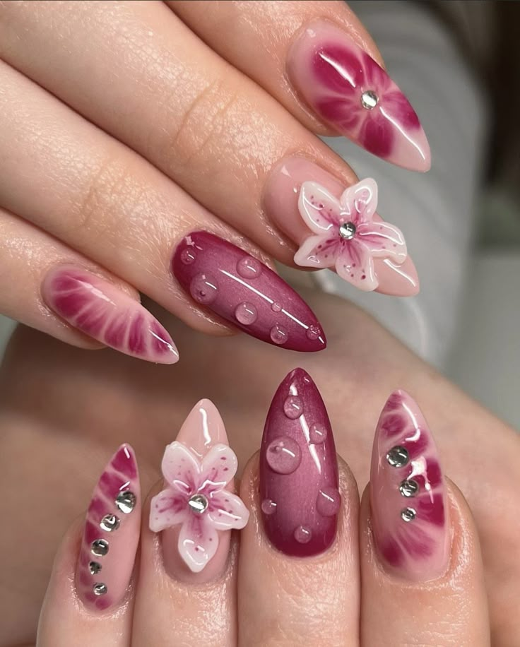
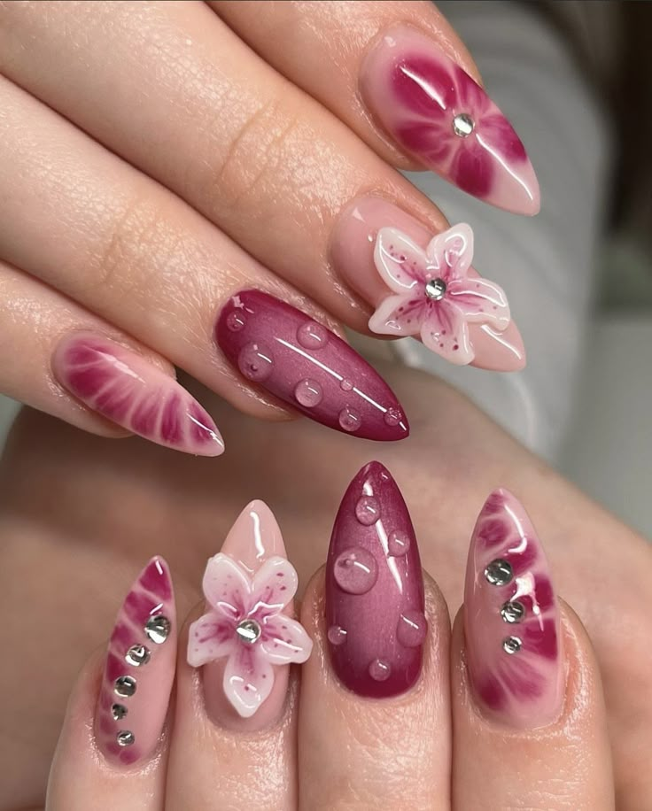

Tentang Pretty Nails

 


Pretty Nails hadir sejak 2025 untuk memberikan solusi kecantikan kuku yang praktis, modern, dan tetap elegan.
Didirikan oleh Nazwa, Pretty Nails menghadirkan koleksi press on nails berkualitas premium yang dirancang untuk semua gaya—mulai dari cute, elegant, hingga bold.
Dengan lebih dari 30 desain yang selalu diperbarui sesuai tren, kami ingin membuat semua orang bisa tampil menawan tanpa harus menghabiskan waktu berjam-jam di salon.
Produk kami dibuat dengan material aman, nyaman, dan dapat digunakan kembali. Kami percaya bahwa setiap kuku bisa menjadi kanvas ekspresi diri, dan Pretty Nails adalah cara termudah untuk menunjukkannya!